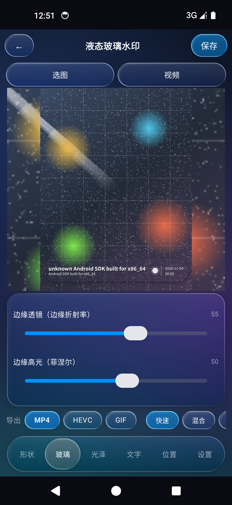
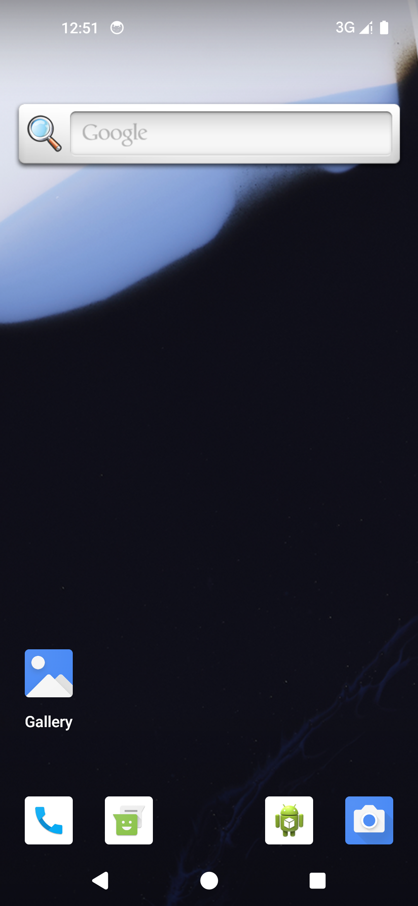

🧊
液态玻璃水印 Liquid Glass Watermark
官方下载站 · Android 照片/视频水印 · 真实折射光学，不是贴纸
v15.16
minSdk 26 · 目标 SDK 34
Android 9 ~ 14 实测
中 / EN / हिन्दी
液态玻璃水印在照片与视频上叠加带有真实折射光学的玻璃透光层： 基于法线的 UV 折射位移、内部放大、色散、菲涅尔边缘光与高光一应俱全——背景透过玻璃真实弯折， 而不是简单的半透明叠加。所有光学参数均可调，提供 HIGH / LOW 两档画质， 支持 4 种布局、14 种品牌 Logo、自定义 Logo，以及 vivo / Google 双格式动态照片。
🧊 液态玻璃光学UV 折射 / 内部放大 / 色散 / 菲涅尔边缘光与高光，全参数可调，HIGH/LOW 双画质档位。
🖼 照片水印4 种布局 · 14 种品牌 Logo · 自定义 Logo 导入 · 中英印三语界面。
🎬 视频水印GPU 硬编快路径 + 逐帧兜底，长视频线性导出，统一出口不跳变。
🎞 动态照片vivo 双文件 / Google XMP 双格式，超过 5 秒自动截取前 5 秒并提示。
⚡ 性能优化离屏层缓存、重组收敛、光学量恢复 v15.15 基线，导出速度实测提升 3.6%~6%。
🔤 字体灵活默认中文 / 跟随系统双模式，切换后全局生效，重启与切换主题均不丢失。
应用截图
以下为 Android 14 模拟器实机运行截图。

主界面 · 照片预览与工具栏选择照片 / 视频后即时预览水印效果

玻璃参数面板折射高度 / 强度 / 色散 / 高光等全部可调

视频预览GPU 实时预览，导出前后视觉一致
安装与使用
- 点击上方下载按钮获取
.apk，在手机文件管理器中打开即可安装（需允许「安装未知来源应用」）。 - 首次进入选择照片或视频（支持系统相册、文件管理器、手动面板导入）。
- 在「玻璃 / 高光 / 文本 / 位置」等标签页调整水印效果；LOW 画质档保留法线折射与扭曲，不会退化成纯透明叠加。
- 导出照片为 PNG/JPEG；导出视频走 GPU 硬编；动态照片自动按 5 秒规范截取并落盘到相册。
- 字体在「设置」页切换默认 / 系统字体，切换后全局立即生效。
使用知会（NOTICE）：本项目无标准软件许可证，也不引用任何第三方 GitHub 开源库；凡拉取 / 使用 / 修改 / 分发 / 集成 / 商用
本项目或其水印能力者，请先通过 Issue 表单知会作者一声。
作者保留署名权。详情见 NOTICE.md。